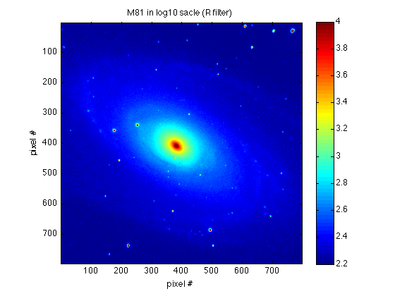
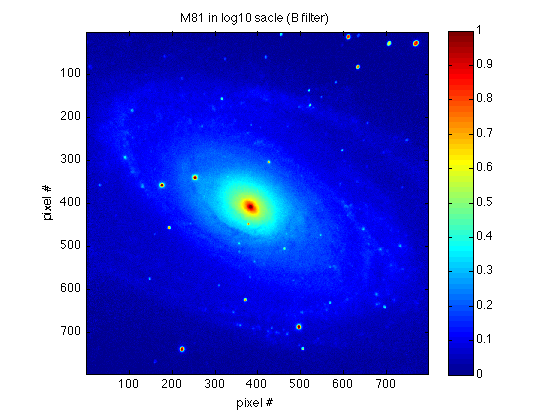
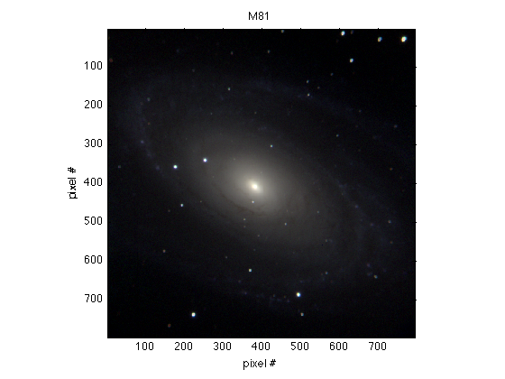

Making composite images
Assuming that now you have data from B, V, and R filters, the structure is aligned in all three images, and you've found the optimized boundaries (Bmin, Bmax, Vmin, etc.) for each image:
imagesc(log10(M81B), [Bmin Bmax]) ... ...
imagesc(log10(M81V), [Vmin Vmax]) ... ...
imagesc(log10(M81R), [Rmin Rmax]) ... ...
|  |
To make a composite image, we need to create a matrix that has 3 planes of the correct size:
rgb=zeros([size(M81B),3]);
(Since M81R, M81V, and M81B all have the same size, it doesn't matter which one you choose to generate rgb.)
Note that these images might have different scaling of data. Therefore, we have to normalize each image so that the values are between 0 and 1. The function imscale basically transfers the input data array to an array includes values between 0 and 1
M81Bn = imscale(log10(M81B), Bmax, Bmin); M81Vn = imscale(log10(M81V), Vmax, Vmin); M81Rn = imscale(log10(M81R), Rmax, Rmin);
Now they all have the same scaling:
imagesc(M81Bn) ... ...
imagesc(M81Vn) ... ...
imagesc(M81Rn) ... ...
|  |
Now we can insert M81Rn in the first plane (the red), M81Vn in the second (the green), and M81Bn in the last (the blue):
rgb(:,:,1) = M81Rn; rgb(:,:,2) = M81Vn; rgb(:,:,3) = M81Bn;
Now we can display the image:
imagesc(rgb) ... ...
You can play with different boundary values and try to get a better image than this!